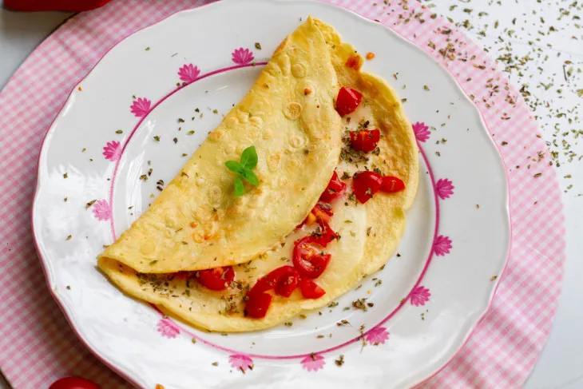
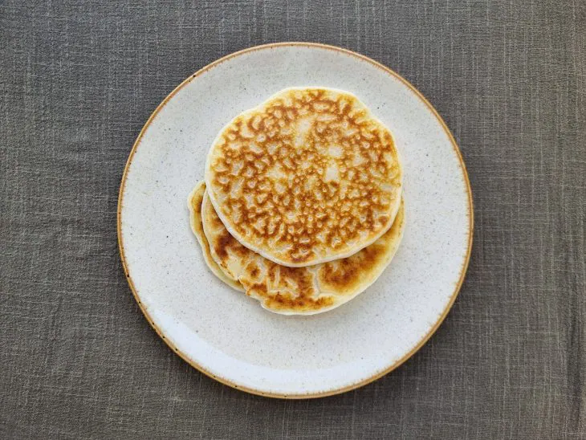
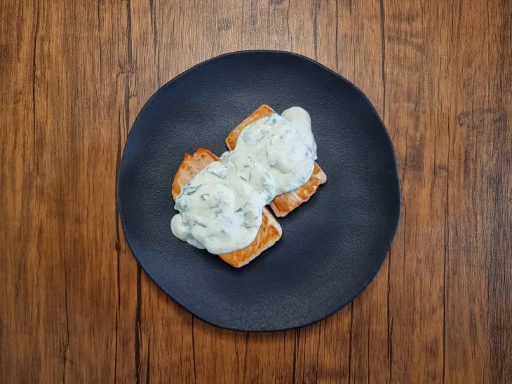

CREPIOCA
- 2 ovos
- 2 colheres de sopa de tapioca
- 1 tomate picado
- muçarela ralada a gosto
- sal e orégano a gosto
- Misture o sal, os ovos e a tapioca
- Despeje o conteúdo em uma frigideira previamente aquecida
- Aguarde até as bordas estarem firmes, e vire para dourar o outro lado
- Acrescente os tomates, a muçarela e o orégano
- Dobre e sirva
PÃO DE QUEIJO DE FRIGIDEIRA
- 2 colheres de sopa de polvilho azedo
- 1/2 xícara de chá de óleo
- queijo parmesão ralado
- 1 colher de farinha de trigo
- 1 xícara de chá de leite
- Misture todos os ingredientes até obter uma massa homogênea
- Deixe a massa descansar por 40 minutos
- Aqueça uma frigideira e coloque uma porçao da massa que cubra todo o fundo da panela
- Vire, para dourar o outro lado
- Sirva com a cobertura da sua preferência
SALMÃO AO MOLHO DE ERVAS
- 1 filé de salmão
- maionese
- alecrim e salsa a gosto
- 1 caixinha de creme de leite
- Em uma frigideira quente, doure o filé de salmão com a pele virada para baixo
- Mantenha o salmão na frigideira até que esteja completamente selado
- Misture a maionese, o creme de leite e as revas até obter um creme
- Sirva o salmão e despeje o creme de ervas sobre ele